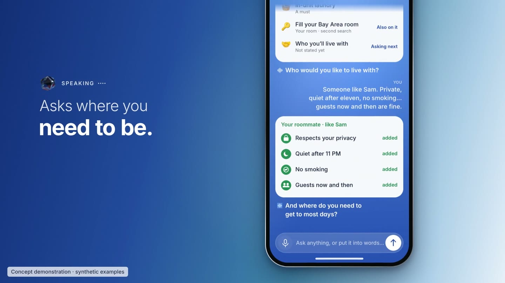

Housie.
Finding a home is about more than a listing. Housie brings people, preferences, and housing into one shared search.
I built the iOS app, backend, and voice agent. We’re preparing for a pilot.
IN DEVELOPMENTView project
Concept demonstration · synthetic examples